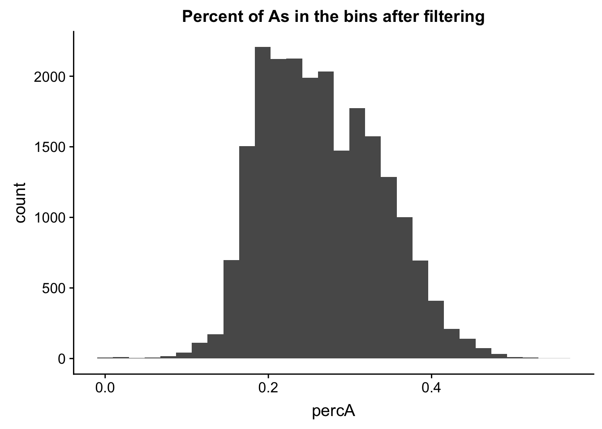
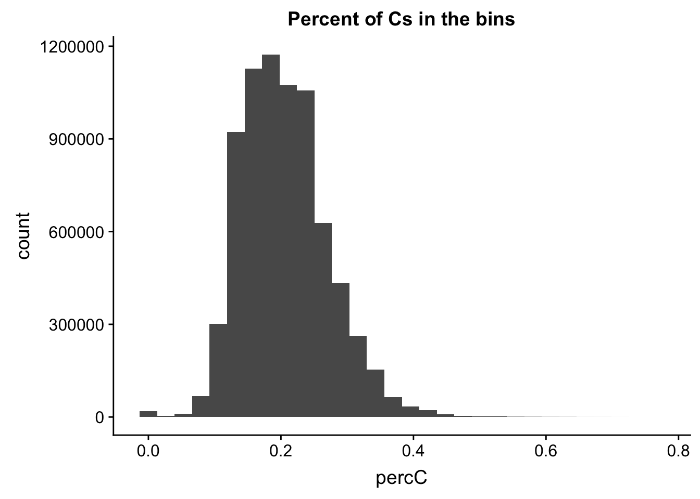
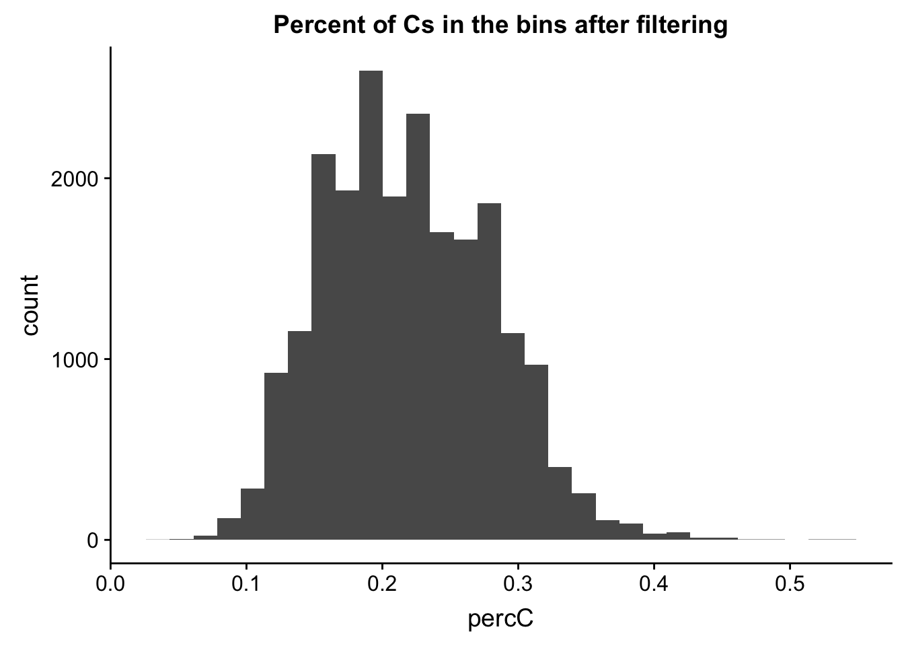
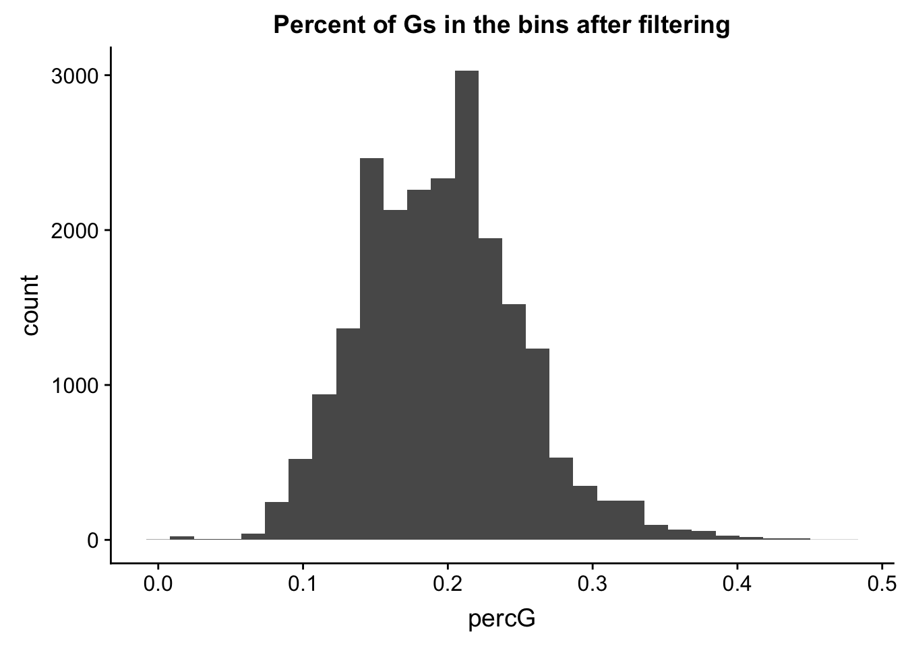
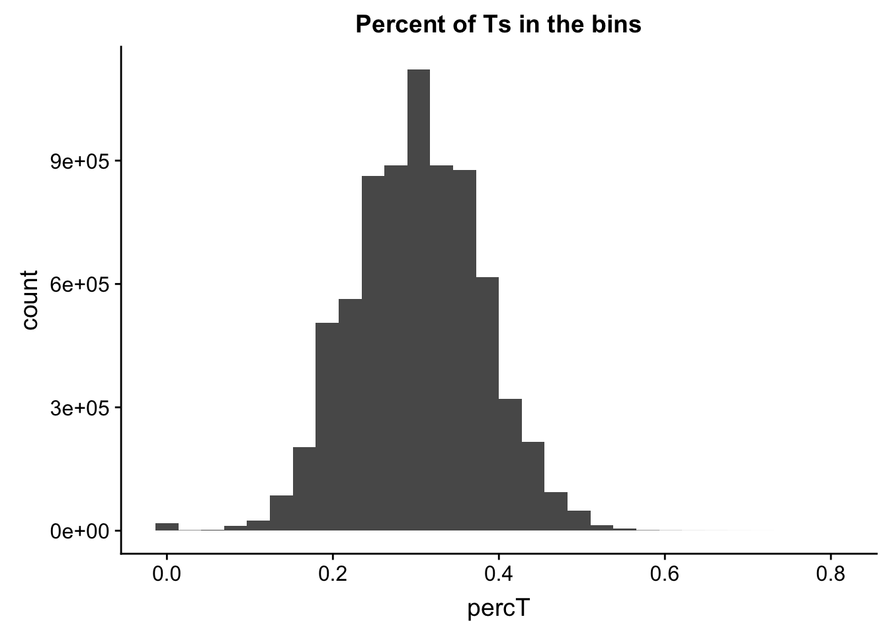
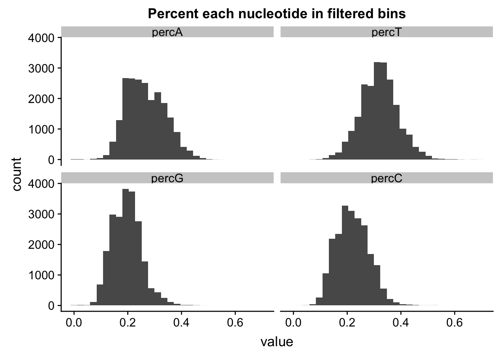
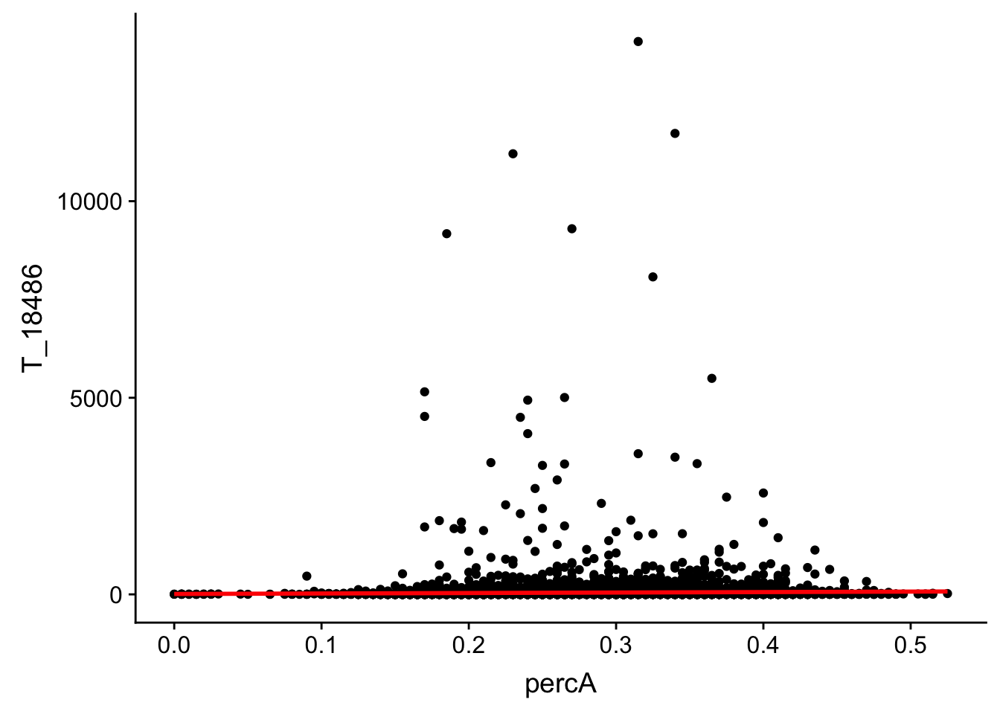
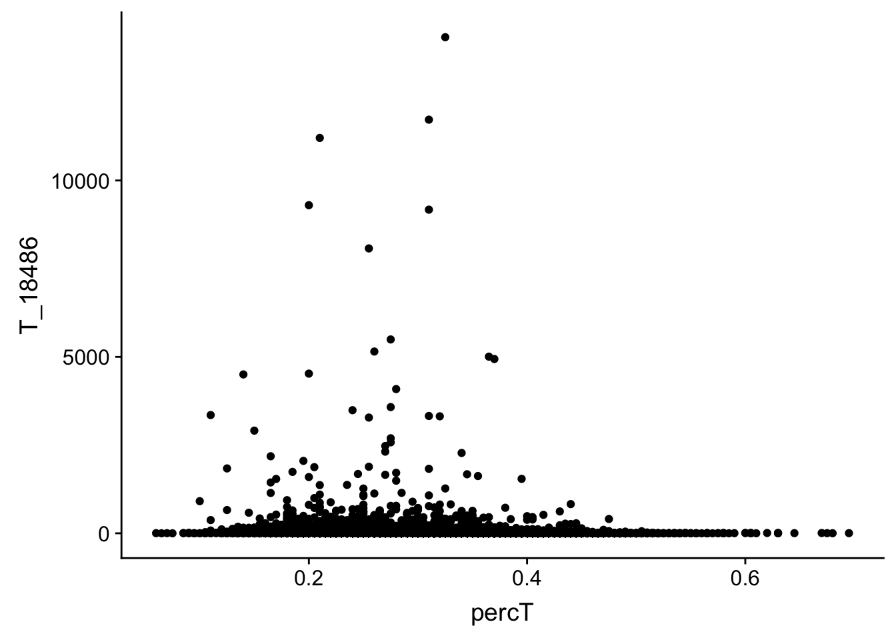
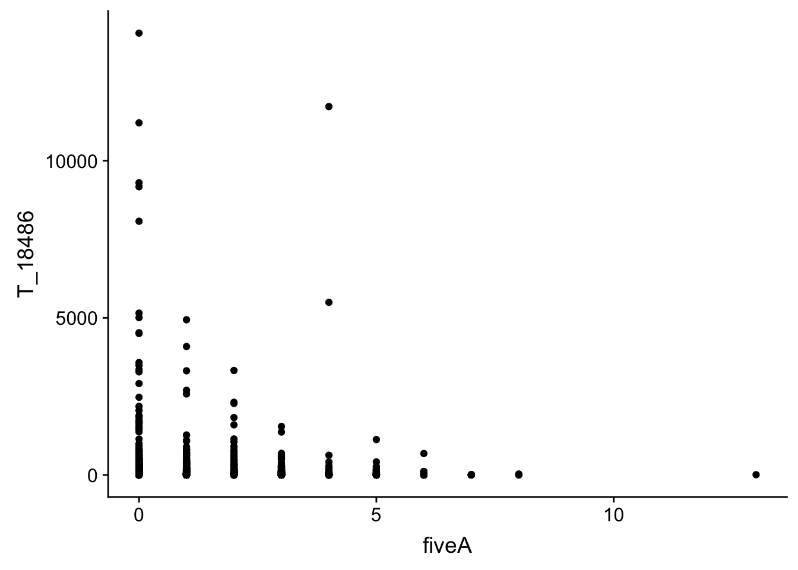

Last updated: 2019-02-15
Checks: 6 0
Knit directory: threeprimeseq/analysis/
This reproducible R Markdown analysis was created with workflowr (version 1.2.0). The Report tab describes the reproducibility checks that were applied when the results were created. The Past versions tab lists the development history.
Great! Since the R Markdown file has been committed to the Git repository, you know the exact version of the code that produced these results.
Great job! The global environment was empty. Objects defined in the global environment can affect the analysis in your R Markdown file in unknown ways. For reproduciblity it’s best to always run the code in an empty environment.
The command set.seed(12345) was run prior to running the code in the R Markdown file. Setting a seed ensures that any results that rely on randomness, e.g. subsampling or permutations, are reproducible.
Great job! Recording the operating system, R version, and package versions is critical for reproducibility.
Nice! There were no cached chunks for this analysis, so you can be confident that you successfully produced the results during this run.
Great! You are using Git for version control. Tracking code development and connecting the code version to the results is critical for reproducibility. The version displayed above was the version of the Git repository at the time these results were generated.
Note that you need to be careful to ensure that all relevant files for the analysis have been committed to Git prior to generating the results (you can use wflow_publish or wflow_git_commit). workflowr only checks the R Markdown file, but you know if there are other scripts or data files that it depends on. Below is the status of the Git repository when the results were generated:
Ignored files:
Ignored: .DS_Store
Ignored: .Rhistory
Ignored: .Rproj.user/
Ignored: data/.DS_Store
Ignored: data/perm_QTL_trans_noMP_5percov/
Ignored: output/.DS_Store
Untracked files:
Untracked: KalistoAbundance18486.txt
Untracked: analysis/4suDataIGV.Rmd
Untracked: analysis/DirectionapaQTL.Rmd
Untracked: analysis/EvaleQTLs.Rmd
Untracked: analysis/YL_QTL_test.Rmd
Untracked: analysis/ncbiRefSeq_sm.sort.mRNA.bed
Untracked: analysis/snake.config.notes.Rmd
Untracked: analysis/verifyBAM.Rmd
Untracked: analysis/verifybam_dubs.Rmd
Untracked: code/PeaksToCoverPerReads.py
Untracked: code/strober_pc_pve_heatmap_func.R
Untracked: data/18486.genecov.txt
Untracked: data/APApeaksYL.total.inbrain.bed
Untracked: data/ApaQTLs/
Untracked: data/ChromHmmOverlap/
Untracked: data/DistTXN2Peak_genelocAnno/
Untracked: data/GM12878.chromHMM.bed
Untracked: data/GM12878.chromHMM.txt
Untracked: data/LianoglouLCL/
Untracked: data/LocusZoom/
Untracked: data/NuclearApaQTLs.txt
Untracked: data/PeakCounts/
Untracked: data/PeakCounts_noMP_5perc/
Untracked: data/PeakCounts_noMP_genelocanno/
Untracked: data/PeakUsage/
Untracked: data/PeakUsage_noMP/
Untracked: data/PeakUsage_noMP_GeneLocAnno/
Untracked: data/PeaksUsed/
Untracked: data/PeaksUsed_noMP_5percCov/
Untracked: data/RNAkalisto/
Untracked: data/RefSeq_annotations/
Untracked: data/TotalApaQTLs.txt
Untracked: data/Totalpeaks_filtered_clean.bed
Untracked: data/UnderstandPeaksQC/
Untracked: data/WASP_STAT/
Untracked: data/YL-SP-18486-T-combined-genecov.txt
Untracked: data/YL-SP-18486-T_S9_R1_001-genecov.txt
Untracked: data/YL_QTL_test/
Untracked: data/apaExamp/
Untracked: data/apaQTL_examp_noMP/
Untracked: data/bedgraph_peaks/
Untracked: data/bin200.5.T.nuccov.bed
Untracked: data/bin200.Anuccov.bed
Untracked: data/bin200.nuccov.bed
Untracked: data/clean_peaks/
Untracked: data/comb_map_stats.csv
Untracked: data/comb_map_stats.xlsx
Untracked: data/comb_map_stats_39ind.csv
Untracked: data/combined_reads_mapped_three_prime_seq.csv
Untracked: data/diff_iso_GeneLocAnno/
Untracked: data/diff_iso_proc/
Untracked: data/diff_iso_trans/
Untracked: data/ensemble_to_genename.txt
Untracked: data/example_gene_peakQuant/
Untracked: data/explainProtVar/
Untracked: data/filtPeakOppstrand_cov_noMP_GeneLocAnno_5perc/
Untracked: data/filtered_APApeaks_merged_allchrom_refseqTrans.closest2End.bed
Untracked: data/filtered_APApeaks_merged_allchrom_refseqTrans.closest2End.noties.bed
Untracked: data/first50lines_closest.txt
Untracked: data/gencov.test.csv
Untracked: data/gencov.test.txt
Untracked: data/gencov_zero.test.csv
Untracked: data/gencov_zero.test.txt
Untracked: data/gene_cov/
Untracked: data/joined
Untracked: data/leafcutter/
Untracked: data/merged_combined_YL-SP-threeprimeseq.bg
Untracked: data/molPheno_noMP/
Untracked: data/mol_overlap/
Untracked: data/mol_pheno/
Untracked: data/nom_QTL/
Untracked: data/nom_QTL_opp/
Untracked: data/nom_QTL_trans/
Untracked: data/nuc6up/
Untracked: data/nuc_10up/
Untracked: data/other_qtls/
Untracked: data/pQTL_otherphen/
Untracked: data/peakPerRefSeqGene/
Untracked: data/perm_QTL/
Untracked: data/perm_QTL_GeneLocAnno_noMP_5percov/
Untracked: data/perm_QTL_GeneLocAnno_noMP_5percov_3UTR/
Untracked: data/perm_QTL_opp/
Untracked: data/perm_QTL_trans/
Untracked: data/perm_QTL_trans_filt/
Untracked: data/protAndAPAAndExplmRes.Rda
Untracked: data/protAndAPAlmRes.Rda
Untracked: data/protAndExpressionlmRes.Rda
Untracked: data/reads_mapped_three_prime_seq.csv
Untracked: data/smash.cov.results.bed
Untracked: data/smash.cov.results.csv
Untracked: data/smash.cov.results.txt
Untracked: data/smash_testregion/
Untracked: data/ssFC200.cov.bed
Untracked: data/temp.file1
Untracked: data/temp.file2
Untracked: data/temp.gencov.test.txt
Untracked: data/temp.gencov_zero.test.txt
Untracked: data/threePrimeSeqMetaData.csv
Untracked: data/threePrimeSeqMetaData55Ind.txt
Untracked: data/threePrimeSeqMetaData55Ind.xlsx
Untracked: data/threePrimeSeqMetaData55Ind_noDup.txt
Untracked: data/threePrimeSeqMetaData55Ind_noDup.xlsx
Untracked: data/threePrimeSeqMetaData55Ind_noDup_WASPMAP.txt
Untracked: data/threePrimeSeqMetaData55Ind_noDup_WASPMAP.xlsx
Untracked: output/picard/
Untracked: output/plots/
Untracked: output/qual.fig2.pdf
Unstaged changes:
Modified: analysis/28ind.peak.explore.Rmd
Modified: analysis/CompareLianoglouData.Rmd
Modified: analysis/NewPeakPostMP.Rmd
Modified: analysis/apaQTLoverlapGWAS.Rmd
Modified: analysis/cleanupdtseq.internalpriming.Rmd
Modified: analysis/coloc_apaQTLs_protQTLs.Rmd
Modified: analysis/dif.iso.usage.leafcutter.Rmd
Modified: analysis/diff_iso_pipeline.Rmd
Modified: analysis/explainpQTLs.Rmd
Modified: analysis/explore.filters.Rmd
Modified: analysis/flash2mash.Rmd
Modified: analysis/mispriming_approach.Rmd
Modified: analysis/overlapMolQTL.Rmd
Modified: analysis/overlapMolQTL.opposite.Rmd
Modified: analysis/overlap_qtls.Rmd
Modified: analysis/peakOverlap_oppstrand.Rmd
Modified: analysis/peakQCPPlots.Rmd
Modified: analysis/pheno.leaf.comb.Rmd
Modified: analysis/pipeline_55Ind.Rmd
Modified: analysis/swarmPlots_QTLs.Rmd
Modified: analysis/test.max2.Rmd
Modified: analysis/test.smash.Rmd
Modified: analysis/understandPeaks.Rmd
Modified: code/Snakefile
Note that any generated files, e.g. HTML, png, CSS, etc., are not included in this status report because it is ok for generated content to have uncommitted changes.
These are the previous versions of the R Markdown and HTML files. If you’ve configured a remote Git repository (see ?wflow_git_remote), click on the hyperlinks in the table below to view them.
| File | Version | Author | Date | Message |
|---|---|---|---|---|
| html | 1cd4c33 | Briana Mittleman | 2018-06-15 | Build site. |
| Rmd | 9d9cfec | Briana Mittleman | 2018-06-15 | add correlation with perc and bin count in N |
| html | 256ba93 | Briana Mittleman | 2018-06-12 | Build site. |
| Rmd | 8e585ce | Briana Mittleman | 2018-06-12 | cov. vs A factors |
| html | ee80ba6 | Briana Mittleman | 2018-06-11 | Build site. |
| Rmd | 3f145ae | Briana Mittleman | 2018-06-11 | signature of mult nucleotide analysus |
| html | 4ef7d85 | Briana Mittleman | 2018-06-11 | Build site. |
| Rmd | 03c7b14 | Briana Mittleman | 2018-06-11 | start A analysis |
The goal of this analysis is to start to understand the sequence composition of the three prime seq reads. This may help me detect misspriming at AAAAA rich regions rather than true site usage. The genomic sequence does not carry the polyadenylation signal, this means reads mapping to a genomic AAAAAA region may be false positives. Gruber et al. removed reads that consisted of more than 80% AAAA.
One method is to measure the number of AAAAAs in my bins with bedtools nuc. I willl need a fasta file and a bed file with the bin.
library(workflowr)This is workflowr version 1.2.0
Run ?workflowr for help getting startedlibrary(ggplot2)
library(dplyr)
Attaching package: 'dplyr'The following objects are masked from 'package:stats':
filter, lagThe following objects are masked from 'package:base':
intersect, setdiff, setequal, unionlibrary(cowplot)
Attaching package: 'cowplot'The following object is masked from 'package:ggplot2':
ggsavelibrary(tidyr)
library(reshape2)
Attaching package: 'reshape2'The following object is masked from 'package:tidyr':
smiths#!/bin/bash
#SBATCH --job-name=nuc.bin
#SBATCH --time=8:00:00
#SBATCH --output=nuc.bin.out
#SBATCH --error=nuc.bin.err
#SBATCH --partition=broadwl
#SBATCH --mem=20G
#SBATCH --mail-type=END
module load Anaconda3
source activate three-prime-env
bedtools nuc -s -fi /project2/gilad/briana/genome_anotation_data/genome/Homo_sapiens.GRCh37.75.dna_sm.all.fa -bed /project2/gilad/briana/genome_anotation_data/an.int.genome_200_strandspec.bed > /project2/gilad/briana/threeprimeseq/data/bin200.nuccov.bed I can now pull this file into R.
bin_nuccov=read.table("../data/bin200.nuccov.bed")
names(bin_nuccov)=c("chr", "start", "end", "bin", "score", "strand", "gene", "pct_at", "pct_gc", "numA", "numC", "numG", "numT", "numN", "numOther", "seqlen")
perc_A_bin=bin_nuccov %>% select("chr", "start", "end","bin", "strand", "gene", "numA") %>% mutate(percA=numA/200)ggplot(perc_A_bin, aes(percA)) + geom_histogram(bins=30) + labs(title="Percent of As in the bins")
I will apply the same filter as I did in the cov.200bp.wind file. I will keep bins with greater than 0 reads in half of the libraries.
cov_all=read.table("../data/ssFC200.cov.bed", header = T, stringsAsFactors = FALSE)
#remember name switch!
names=c("Geneid","Chr", "Start", "End", "Strand", "Length", "N_18486","T_18486","N_18497","T_18497","N_18500","T_18500","N_18505",'T_18505',"N_18508","T_18508","N_18853","T_18853","N_18870","T_18870","N_19128","T_19128","N_19141","T_19141","N_19193","T_19193","N_19209","T_19209","N_19223","N_19225","T_19225","T_19223","N_19238","T_19238","N_19239","T_19239","N_19257","T_19257")
colnames(cov_all)= names
cov_nums_only=cov_all[,7:38]
keep.exprs=rowSums(cov_nums_only>0) >= 16
cov_all_filt=cov_all[keep.exprs,]
cov_all_filt_bins= cov_all_filt %>% separate(col=Geneid, into=c("bin","gene"), sep=".E") %>% select(bin)
cov_all_filt_bins$bin=as.integer(cov_all_filt_bins$bin)I will intersect the percA file with the bins in the filtered file.
perc_A_bin_filt= perc_A_bin %>% semi_join(cov_all_filt_bins, by="bin")I can no plot the distribution of percA in this.
ggplot(perc_A_bin_filt, aes(percA)) + geom_histogram(bins = 30) + labs(title="Percent of As in the bins after filtering")
I will compare this distribution to those for other nucleotides. (C)
perc_C_bin=bin_nuccov %>% select("chr", "start", "end","bin", "strand", "gene", "numC") %>% mutate(percC=numC/200)
ggplot(perc_C_bin, aes(percC)) + geom_histogram(bins=30) + labs(title="Percent of Cs in the bins")
perc_C_bin_filt= perc_C_bin %>% semi_join(cov_all_filt_bins, by="bin")
ggplot(perc_C_bin_filt, aes(percC)) + geom_histogram(bins = 30) + labs(title="Percent of Cs in the bins after filtering")
’ For G
perc_G_bin=bin_nuccov %>% select("chr", "start", "end","bin", "strand", "gene", "numG") %>% mutate(percG=numG/200)
ggplot(perc_G_bin, aes(percG)) + geom_histogram(bins=30) + labs(title="Percent of Gs in the bins")
perc_G_bin_filt= perc_G_bin %>% semi_join(cov_all_filt_bins, by="bin")
ggplot(perc_G_bin_filt, aes(percG)) + geom_histogram(bins = 30) + labs(title="Percent of Gs in the bins after filtering")
for T
perc_T_bin=bin_nuccov %>% select("chr", "start", "end","bin", "strand", "gene", "numT") %>% mutate(percT=numT/200)
ggplot(perc_T_bin, aes(percT)) + geom_histogram(bins=30) + labs(title="Percent of Ts in the bins")
perc_T_bin_filt= perc_T_bin %>% semi_join(cov_all_filt_bins, by="bin")
ggplot(perc_T_bin_filt, aes(percT)) + geom_histogram(bins = 30) + labs(title="Percent of Ts in the bins after filtering")
Now I will join all of the percent usage of each nucleotide in the filtered bins so I can plot them on one plot.
percNuc= perc_A_bin_filt %>% left_join(perc_T_bin_filt, by=c("chr", "start", "end", "bin", "strand", "gene")) %>% left_join(perc_G_bin_filt, by=c("chr", "start", "end", "bin", "strand", "gene")) %>% left_join(perc_C_bin_filt, by=c("chr", "start", "end", "bin", "strand", "gene")) %>% select("bin", "percA", "percT", "percG", "percC")
percNuc_melt=melt(percNuc, id.vars = "bin")
ggplot(percNuc_melt, aes(value)) + geom_histogram(bins = 30) + facet_wrap(~variable) + labs(title="Percent each nucleotide in filtered bins")
Next check is if the bins have 5 As in a row. I can do this using bedtools nuc as well.
###Five A’s
#!/bin/bash
#SBATCH --job-name=nucA
#SBATCH --time=8:00:00
#SBATCH --output=nucA.out
#SBATCH --error=nucA.err
#SBATCH --partition=broadwl
#SBATCH --mem=20G
#SBATCH --mail-type=END
module load Anaconda3
source activate three-prime-env
bedtools nuc -s -fi /project2/gilad/briana/genome_anotation_data/genome/Homo_sapiens.GRCh37.75.dna_sm.all.fa -bed /project2/gilad/briana/genome_anotation_data/an.int.genome_200_strandspec.bed -pattern "AAAAA" > /project2/gilad/briana/threeprimeseq/data/bin200.5.A.nuccov.bed bin_Anuccov=read.table("../data/bin200.Anuccov.bed")
names(bin_Anuccov)=c("chr", "start", "end", "bin", "score", "strand", "gene", "pct_at", "pct_gc", "numA", "numC", "numG", "numT", "numN", "numOther", "seqlen", "fiveA")
hist(bin_Anuccov$fiveA)
| Version | Author | Date |
|---|---|---|
| ee80ba6 | Briana Mittleman | 2018-06-11 |
I will filter this the same way I filtered the other file.
bin_Anuccov_filt = bin_Anuccov %>% semi_join(cov_all_filt_bins, by="bin") %>% select( bin, gene, fiveA)
hist(bin_Anuccov_filt$fiveA)
| Version | Author | Date |
|---|---|---|
| ee80ba6 | Briana Mittleman | 2018-06-11 |
summary(bin_Anuccov_filt$fiveA) Min. 1st Qu. Median Mean 3rd Qu. Max.
0.0000 0.0000 0.0000 0.4404 0.0000 13.0000 Count the number of bins with each value for number of 5 AAAAA
countA_regions= bin_Anuccov_filt %>% group_by(fiveA) %>% count(fiveA)I will compare this to regions with 5 T’s
(This isnt the best comparison because the probability of each of these stretches genome wide may be different)
#!/bin/bash
#SBATCH --job-name=nucT
#SBATCH --time=8:00:00
#SBATCH --output=nucT.out
#SBATCH --error=nucT.err
#SBATCH --partition=broadwl
#SBATCH --mem=20G
#SBATCH --mail-type=END
module load Anaconda3
source activate three-prime-env
bedtools nuc -s -fi /project2/gilad/briana/genome_anotation_data/genome/Homo_sapiens.GRCh37.75.dna_sm.all.fa -bed /project2/gilad/briana/genome_anotation_data/an.int.genome_200_strandspec.bed -pattern "TTTTT" > /project2/gilad/briana/threeprimeseq/data/bin200.5.T.nuccov.bed bin_Tnuccov=read.table("../data/bin200.5.T.nuccov.bed")
names(bin_Tnuccov)=c("chr", "start", "end", "bin", "score", "strand", "gene", "pct_at", "pct_gc", "numA", "numC", "numG", "numT", "numN", "numOther", "seqlen", "fiveT")
summary(bin_Tnuccov$fiveT) Min. 1st Qu. Median Mean 3rd Qu. Max.
0.0000 0.0000 0.0000 0.4191 0.0000 14.0000 bin_Tnuccov_filt = bin_Tnuccov %>% semi_join(cov_all_filt_bins, by="bin") %>% select( bin, gene, fiveT)
hist(bin_Tnuccov_filt$fiveT)
| Version | Author | Date |
|---|---|---|
| ee80ba6 | Briana Mittleman | 2018-06-11 |
summary(bin_Tnuccov_filt$fiveT) Min. 1st Qu. Median Mean 3rd Qu. Max.
0.0000 0.0000 0.0000 0.5163 1.0000 9.0000 countT_regions= bin_Tnuccov_filt %>% group_by(fiveT) %>% count(fiveT)The numbers are not super different.
cov_all_filt
#select bin coverage fore 18486
cov_all_filt_18486=cov_all_filt %>%separate(col=Geneid, into=c("bin","gene"), sep=".E") %>% select(bin, T_18486)
cov_all_filt_18486$bin=as.integer(cov_all_filt_18486$bin)
#join with percA
perc_A_bin_filt_cov= perc_A_bin_filt %>% select(bin, percA) %>% right_join(cov_all_filt_18486,by="bin")
#melt it
perc_A_bin_filt_cov_melt=melt(perc_A_bin_filt_cov, id.vars="bin")
#plot it
perA_18486total=ggplot(perc_A_bin_filt_cov, aes(y=T_18486, x=percA)) + geom_point()+ labs(y="Total Bin count",x="Percent A in bin") + geom_smooth(method="lm", col="red")
#select bin coverage fore 18486
cov_all_filt_18486N=cov_all_filt %>%separate(col=Geneid, into=c("bin","gene"), sep=".E") %>% select(bin, N_18486)
cov_all_filt_18486N$bin=as.integer(cov_all_filt_18486N$bin)
#join with percA
perc_A_bin_filt_covN= perc_A_bin_filt %>% select(bin, percA) %>% right_join(cov_all_filt_18486N,by="bin")
#melt it
perc_A_bin_filt_cov_melNt=melt(perc_A_bin_filt_covN, id.vars="bin")
perA_18486nuc=ggplot(perc_A_bin_filt_covN, aes(y=N_18486, x=percA)) + geom_point() + labs(y="Nuclear Bin count",x="Percent A in bin") + geom_smooth(method="lm", col="red")
title <- ggdraw() + draw_label("No relationship between bin read count and percentage \n of A nucleotides in a bin ", fontface = 'bold')
x=plot_grid(perA_18486total,perA_18486nuc)
grid.plot=plot_grid(title, x,ncol=1, rel_heights=c(0.3, 1))
ggsave( "../output/plots/perc.A.bincount.png", grid.plot, width = 10, height = 7)lm(perc_A_bin_filt_covN$percA~perc_A_bin_filt_covN$N_18486 )
Call:
lm(formula = perc_A_bin_filt_covN$percA ~ perc_A_bin_filt_covN$N_18486)
Coefficients:
(Intercept) perc_A_bin_filt_covN$N_18486
2.655e-01 2.643e-05 lm( perc_A_bin_filt_cov$percA ~ perc_A_bin_filt_cov$T_18486)
Call:
lm(formula = perc_A_bin_filt_cov$percA ~ perc_A_bin_filt_cov$T_18486)
Coefficients:
(Intercept) perc_A_bin_filt_cov$T_18486
0.2658285 0.0000085 Both have about a 0 correlation.
I will remove bins we did not have coverage in.
perc_A_bin_filt_cov_no0= perc_A_bin_filt %>% select(bin, percA) %>% right_join(cov_all_filt_18486,by="bin") %>% filter(T_18486 >0 )
ggplot(perc_A_bin_filt_cov_no0, aes(y=T_18486, x=percA)) + geom_point() + geom_smooth(method="lm", col="red")
Check for T
#join with percA
perc_T_bin_filt_cov= perc_T_bin_filt %>% select(bin, percT) %>% right_join(cov_all_filt_18486,by="bin")
#melt it
perc_T_bin_filt_cov_melt=melt(perc_T_bin_filt_cov, id.vars="bin")
#plot it
ggplot(perc_T_bin_filt_cov, aes(y=T_18486, x=percT)) + geom_point()
#join with fiveA
bin_Anuccov_filt_cov= bin_Anuccov_filt %>% select(bin, fiveA) %>% right_join(cov_all_filt_18486,by="bin")
#plot it
ggplot(bin_Anuccov_filt_cov, aes(y=T_18486, x=fiveA)) + geom_point()
| Version | Author | Date |
|---|---|---|
| 1cd4c33 | Briana Mittleman | 2018-06-15 |
It does not look like these are drivers of the variation we see in counts.
This analysis has shown me that mispriming is not a global problem in the samples. We do not see a correlaation bertween percent As in a bin and the read count for either the total or the nuclear. I also do not see any outliers bins with high coverage and high A percentage. If this is a problem it is at a specfici locus level. We can assess this in regions we see differences between total and nuclear fractions.
sessionInfo()R version 3.5.1 (2018-07-02)
Platform: x86_64-apple-darwin15.6.0 (64-bit)
Running under: macOS 10.14.1
Matrix products: default
BLAS: /Library/Frameworks/R.framework/Versions/3.5/Resources/lib/libRblas.0.dylib
LAPACK: /Library/Frameworks/R.framework/Versions/3.5/Resources/lib/libRlapack.dylib
locale:
[1] en_US.UTF-8/en_US.UTF-8/en_US.UTF-8/C/en_US.UTF-8/en_US.UTF-8
attached base packages:
[1] stats graphics grDevices utils datasets methods base
other attached packages:
[1] bindrcpp_0.2.2 reshape2_1.4.3 tidyr_0.8.1 cowplot_0.9.3
[5] dplyr_0.7.6 ggplot2_3.0.0 workflowr_1.2.0
loaded via a namespace (and not attached):
[1] Rcpp_0.12.19 compiler_3.5.1 pillar_1.3.0 git2r_0.24.0
[5] plyr_1.8.4 bindr_0.1.1 tools_3.5.1 digest_0.6.17
[9] evaluate_0.13 tibble_1.4.2 gtable_0.2.0 pkgconfig_2.0.2
[13] rlang_0.2.2 yaml_2.2.0 withr_2.1.2 stringr_1.4.0
[17] knitr_1.20 fs_1.2.6 rprojroot_1.3-2 grid_3.5.1
[21] tidyselect_0.2.4 glue_1.3.0 R6_2.3.0 rmarkdown_1.11
[25] purrr_0.2.5 magrittr_1.5 whisker_0.3-2 backports_1.1.2
[29] scales_1.0.0 htmltools_0.3.6 assertthat_0.2.0 colorspace_1.3-2
[33] labeling_0.3 stringi_1.2.4 lazyeval_0.2.1 munsell_0.5.0
[37] crayon_1.3.4